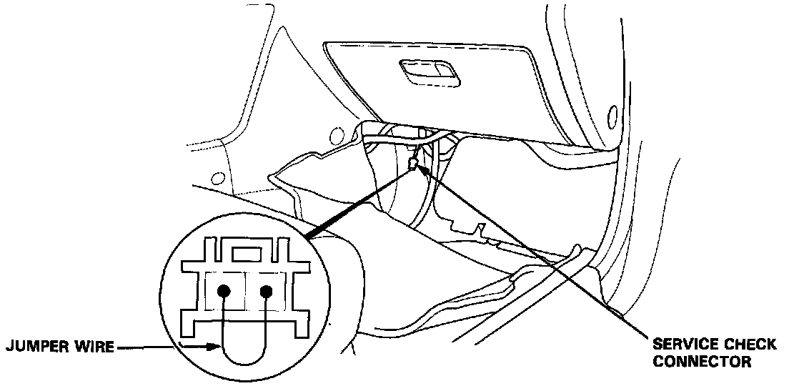
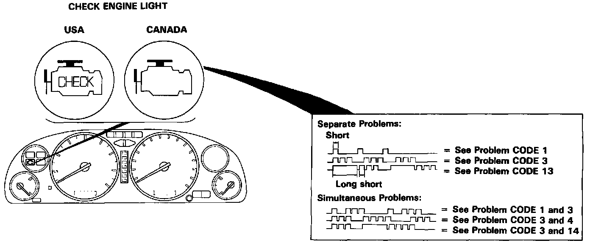
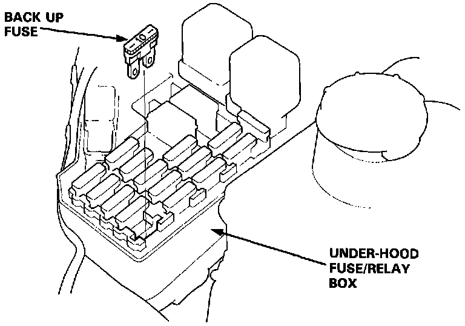

Without Scan Tool
Self-Diagnostic ProceduresI. When the Check Engine light has been reported on, do the following:

1. Connect the Service Check Connector terminals with a jumper wire as shown (the Service Check Connector is located under the dash on the passenger side of the car). Turn the ignition switch on.

2. Note the CODE: the Check Engine light indicates a failure code by the length and number of blinks. The Check Engine light can indicate simultaneous component problems by blinking separate codes, one after another. Problem codes 1 through 9 are indicated by individual short blinks. Problem codes 10 through 59 are indicated by a series of long and short blinks. The number of long blinks equals the first digit, the number of short blinks equals the second digit.

II. ECU Reset Procedure
1. Turn the ignition switch off.
2. Remove the BACK UP fuse (10 A) from the under-hood fuse/relay box for 10 seconds to reset the ECU.
NOTE: Disconnecting the BACK UP fuse also cancels the radio preset stations and the clock setting. Make note of the radio presets before removing the fuse so you reset them.
III. Final Procedure (this procedure must be done after any troubleshooting)
1. Remove the Jumper Wire.
NOTE: If the Service Check Connector is jumped, the Check Engine light will stay on.
2. Do the ECU Reset Procedure.
3. Set the radio preset stations and the clock setting.